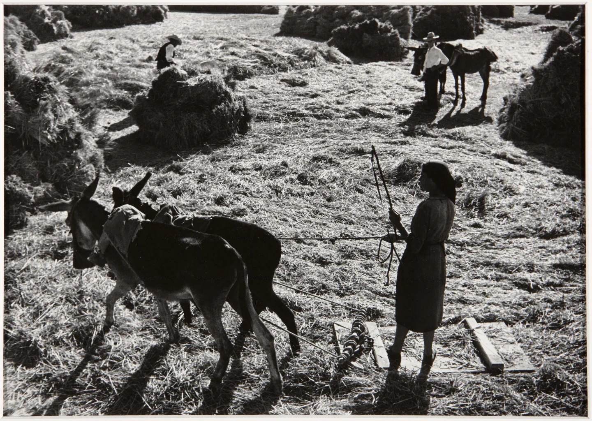
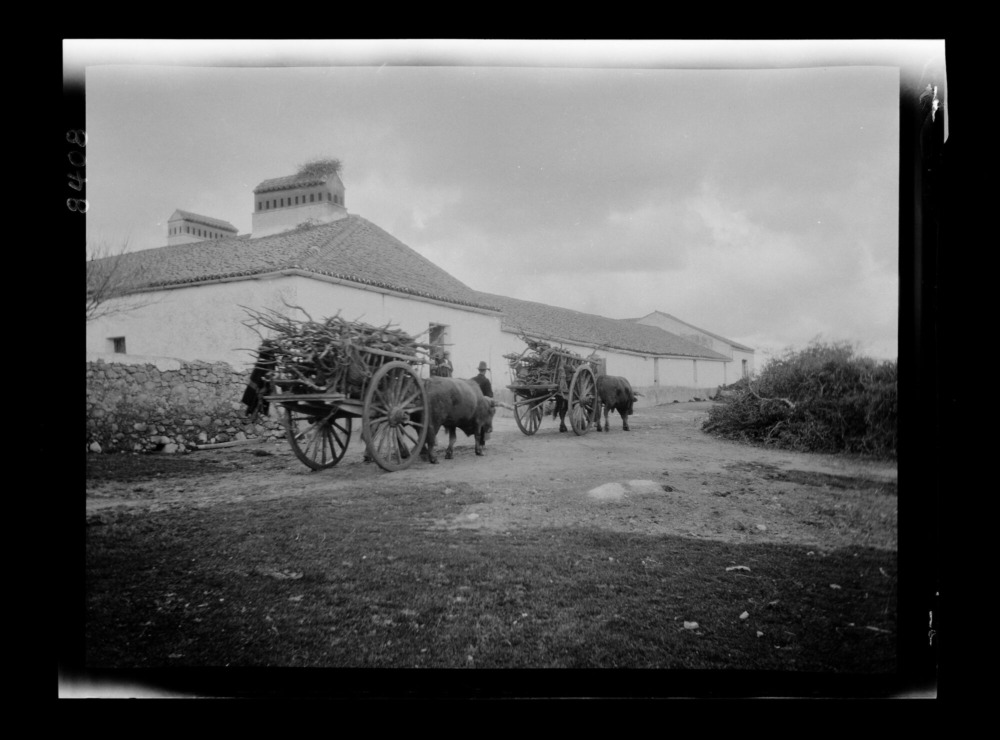
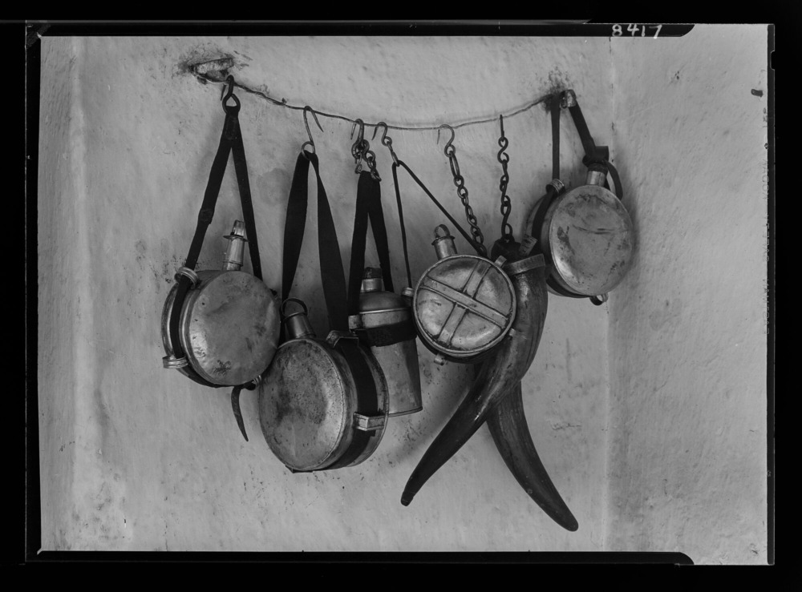
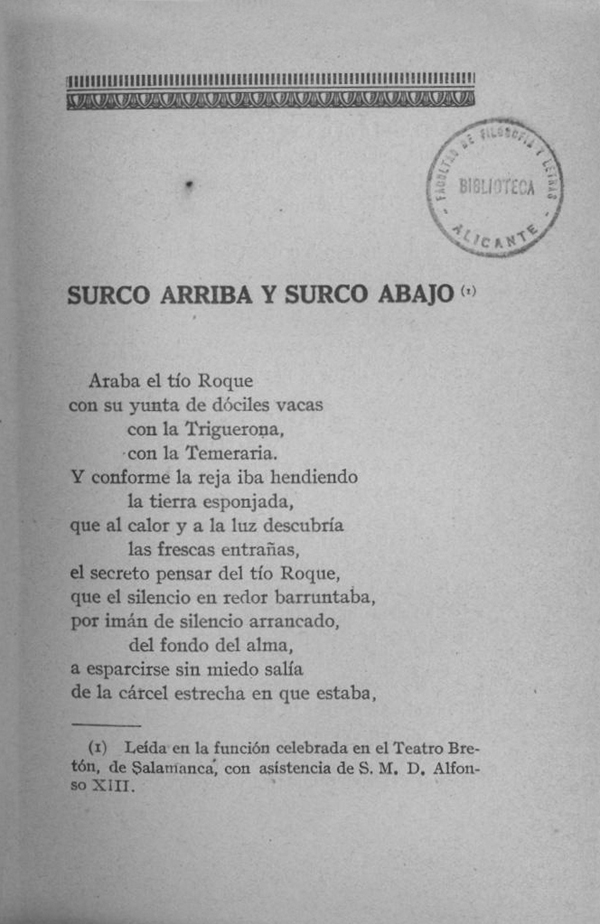

Composición arquitectónica I01
Villafranco de guadiana, espacios laborales
El espacio agropecuario
Un estudio del caso de Villafranco de Guadiana en el diseño de los poblados de colonización.
01 — Contexto
El plan Badajoz
El Plan Badajoz, aprobado en 1952 durante la dictadura franquista, fue un ambicioso proyecto de transformación agrícola, económica y territorial de la provincia de Badajoz.
En un contexto de posguerra, pobreza rural y fuerte desigualdad en la propiedad de la tierra, el régimen impulsó la construcción de embalses, canales de riego e infraestructuras, junto con la creación de nuevos asentamientos agrícolas, con el fin de fomentar la producción de alimentos y materias primas en tierras españolas.
Aunque retomaba iniciativas hidráulicas anteriores, planteadas durante las primeras décadas del siglo XX y la Segunda República, el plan se convirtió también en uno de los principales instrumentos de modernización y propaganda del franquismo.
02 — El campo español
Los espacios laborales del campo español
Los espacios asociados a la vida laboral del mundo rural son uno de los patrimonios olvidados más valiosos de España. El mundo rural, de pueblo, el de la España ahora vaciada se asocia a estructuras urbanas y territoriales orientadas a optimizar el uso de recursos alrededor de la actividad agropecuaria.
La arquitectura y urbanismo tradicionales, entendidos no como disciplinas de estudio sino como conjunto de saberes populares son ejemplo de la afinada manera que existía de optimizar los recursos alrededor de la labor productiva, que era el sustento de cada familia que habitaba estos espacios.
De esta forma, la vida rural dependía inevitablemente de la relación del ser humano con las labores productivas de las que dependía su supervivencia.


03 — Imaginario laboral
Elementos del mundo agropecuario
El imaginario que rodea el mundo del trabajo en el campo consta de diversos espacios, objetos y animales con los que el trabajador se relacionaba de forma diaria para desempeñar sus labores.
Estos elementos constituian la cotidianidad de los españoles en tiempos anteriores a la guerra civil. A día de hoy en ellos existe un interés peculiar, una esencia cotidiana que sorprende por lo ajeno de sus formas al modo de vivir y a los elementos con los que tratamos de forma cotidiana a día de hoy.


05 — Audiovisual